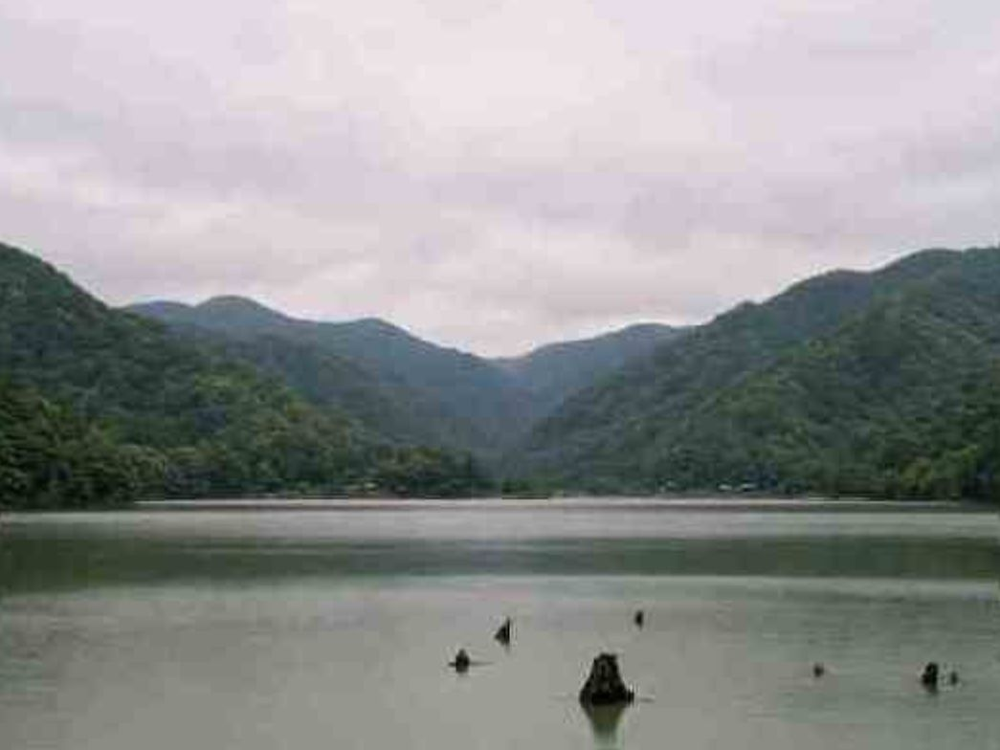
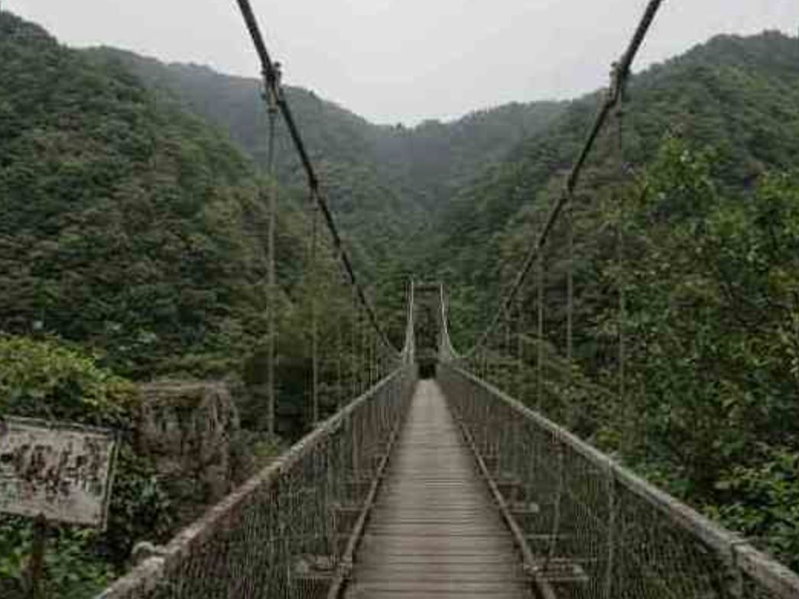
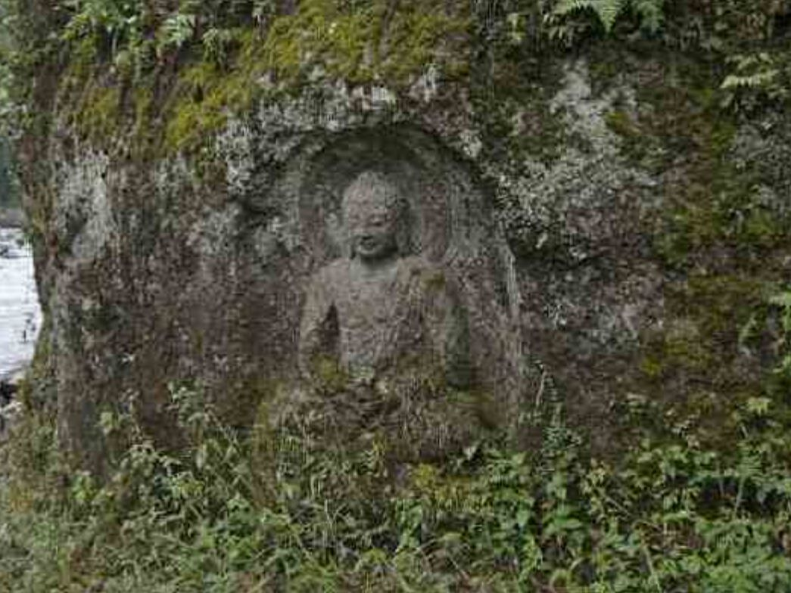
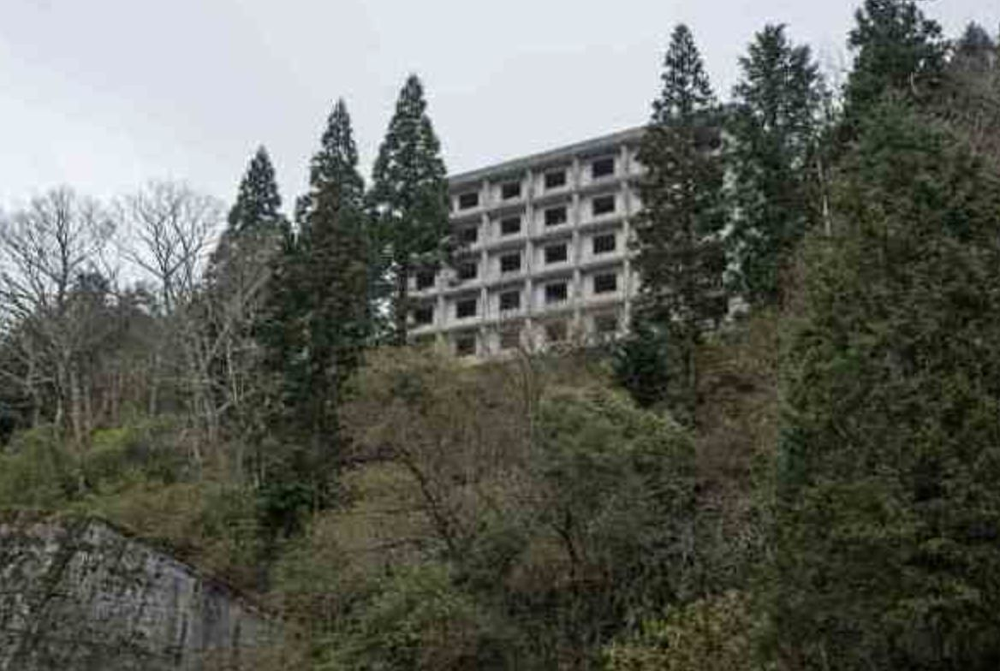
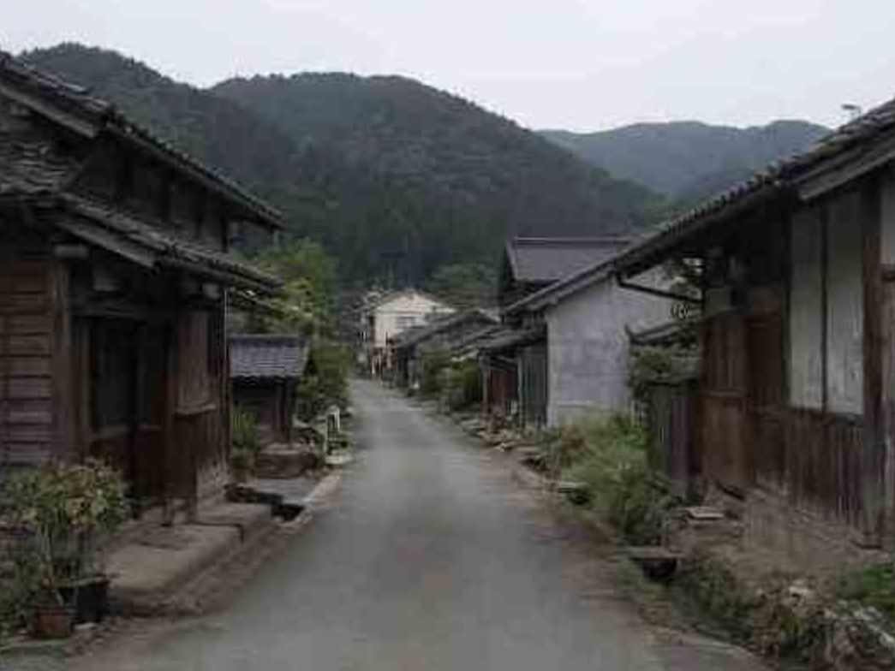
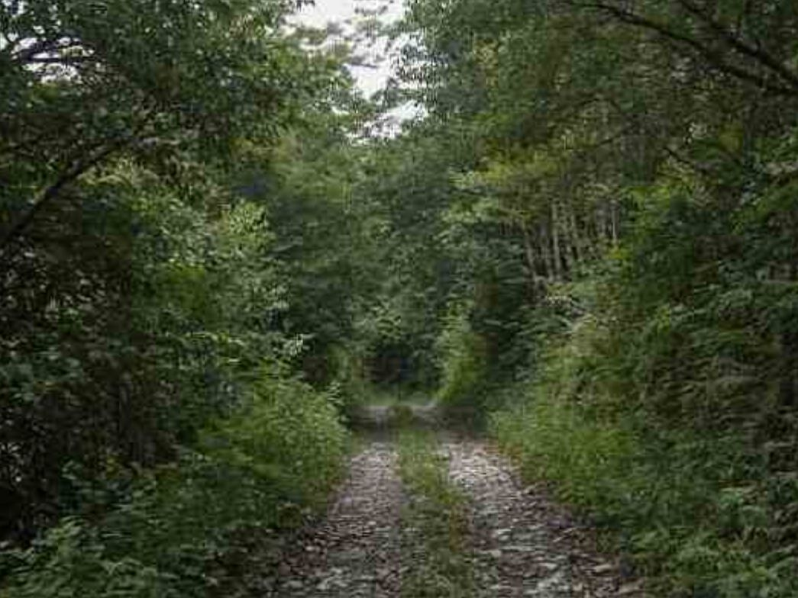

|
迫小淵・澄原地区 地域振興観光案内 〜豊かな山と水にいだかれた里へようこそ〜 |
迫小淵・澄原地域振興協議会 公式ホームページ |
|
お天気情報
当地区の天気は下記リンク先の天気予報サービスをご参照ください。
▶ 三重県南部の天気（外部サイト） リンク集
アクセスカウンター
あなたは
002391 人目の訪問者です |
お知らせ・新着情報
迫小淵・澄原地区について迫小淵・澄原地区は、三重県南部の山あいに位置する自然豊かな地域です。深い谷を流れる清流と、その流れをせき止めて生まれた迫小淵湖、そして古くから人々の暮らしを見守ってきた磨崖仏など、静かで落ち着いた里山の風景が今も残っています。 近年は都市部からの日帰り・一泊旅行の行き先としても、少しずつ知られるようになってまいりました。当ホームページでは、当地区の観光名所、歴史、アクセス方法などをご紹介しております。ぜひごゆっくりご覧ください。
沿革・歴史当地区は古くから山間の集落として、林業と川漁を中心とした暮らしが営まれてきました。地区名の「迫小淵」は谷が狭まり水が深く淀む地形に、「澄原」は清らかな水にちなむと伝えられておりますが、正確な由来を示す資料は現在のところ確認されておりません。 迫小淵湖とダムについて昭和期の河川開発にともない、上流にダムが建設され、現在の迫小淵湖が形成されました。ダム建設にあたっては、湖の下流域にあった旧集落の移転が行われ、住民の皆様は現在の場所へと居を移されました。当時の詳しい経緯については、地区の古老よりお話をうかがうことができますので、ご興味のある方はお問い合わせください。 澄原磨崖仏について澄原地区の川沿いの岩壁には、古くから磨崖仏が彫られています。彫られた時期や彫った人物についての記録は残っておらず、地区では「昔からあるもの」として大切にお祀りされてきました。現在も地区の方々により、年に一度、清掃と供養が行われていると聞いております。
※沿革・歴史のページは資料調査中の部分が多く、随時内容を追記してまいります。誤りにお気づきの際は、お手数ですが地域振興協議会までご連絡ください。
名所・見どころ迫小淵大橋集落の住民が私財を出し合って建設したと伝えられる、生活用の吊り橋です。谷を渡る際の心地よい揺れと、橋上から望む渓谷の眺めが人気です。 澄原磨崖仏川沿いの岩壁に彫られた磨崖仏です。長い年月による風化のため、お姿の細部ははっきりとはご確認いただけませんが、その素朴な佇まいに趣があると評判です。案内板等は簡素なものとなっておりますので、あらかじめご了承ください。 迫小淵グランドホテル跡（外観のみ）かつて温泉客でにぎわった観光ホテルの跡地です。現在は営業しておらず、老朽化のため建物内部への立ち入りはできません。対岸の展望スペースより外観をご覧いただけます。 迫小淵湖山々に囲まれた静かなダム湖です。天候の良い日には湖面に周囲の山並みが美しく映り込みます。 写真ギャラリー地区の風景写真を掲載しております。（撮影：地区観光係）  迫小淵湖（春〜夏の様子）
 迫小淵大橋
 澄原磨崖仏
 迫小淵グランドホテル跡（対岸より）
 迫小淵の集落風景
 澄原へ向かう山道
アクセス
※バスの時刻表は季節により変更となる場合がございます。最新の情報は運行会社の公式ページをご確認ください。
|